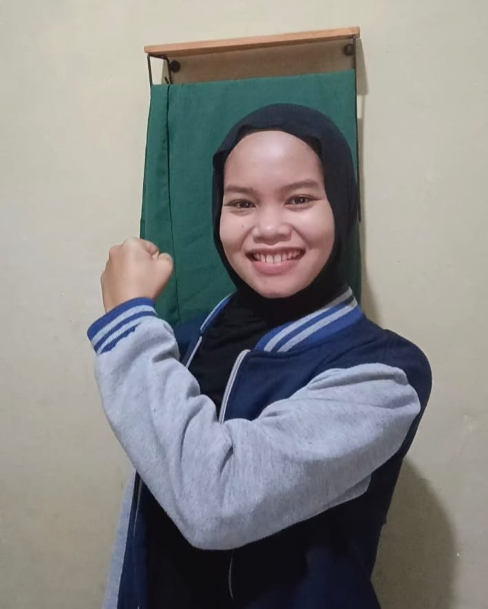
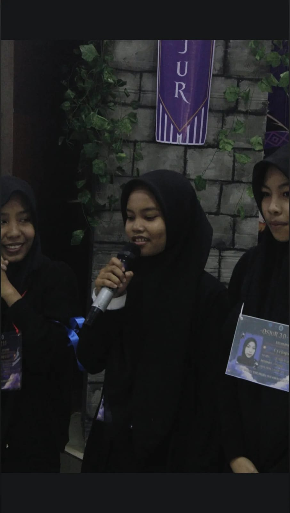
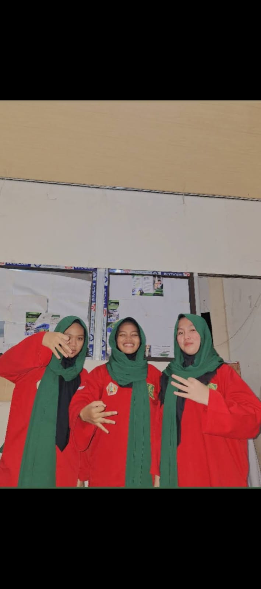

BIODATA
Nama: Zulfa Zamain
TTL: Garut, 12 Agustus 2006
Status: Mahasiswa Aktif
Alamat: Kp. Rumbut, Kel. Pasir Gunung Selatan, Cimanggis, Depok
Email: zulfazamain40@gmail.com
Whatsapp: 0882-9370-2332
Saya merupakan mahasiswa aktif jurusan Teknik Informatika di STT Terpadu Nurul Fikri. Saya memiliki ketertarikan pada dunia teknologi, pemrograman, dan desain web.
Saya senang mempelajari hal baru dan mengembangkan kemampuan diri. Setelah lulus saya bercita-cita ingin menjadi programmer yang professional. di bawah ini ada beberapa informasi tentang saya:Video Saya
Foto Saya

